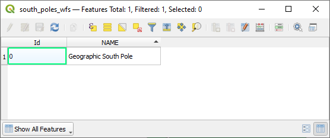

10.2. သင်ခန်းစာ - Web Feature Services (Lesson: Web Feature Services)
Web Feature Service (WFS) တစ်ခုသည် QGIS ထဲတွင် တိုက်ရိုက်ထည့်သွင်းအသုံးပြုနိုင်သော format များဖြင့် GIS data များပံ့ပိုးပေးပါသည်။ WMS နှင့်မတူသည်မှာ WMS သည် ပြင်ဆင်၍မရသောမြေပုံတစ်ခုကိုသာ ပံ့ပိုးပေးပြီး WFS သည် feature များကို သုံးစွဲခွင့်ပေးခြင်းဖြစ်သည်။
ဤသင်ခန်းစာအတွက် ရည်မှန်းချက်- WFS တစ်ခုကိုအသုံးပြုတတ်စေရန်နှင့် WMS နှင့် WFS ကွာခြားပုံကို နားလည်စေရန်။
10.2.1. ★☆☆ လိုက်လုပ်ကြည့်ပါ - WFS Layer တစ်ခုထည့်သွင်းခြင်း (Follow Along: Loading a WFS Layer)
မြေပုံအသစ်တစ်ခုစတင်ပါ။ နမူနာပြသခြင်းအတွက်ဖြစ်ပြီး ၎င်းကိုသိမ်းဆည်းမည်မဟုတ်ပါ။
 Open Data Source Manager ခလုတ်ကိုနှိပ်ပါ။
Open Data Source Manager ခလုတ်ကိုနှိပ်ပါ။ WFS / OGC API - Features tab ကိုဖွင့်ပါ။
WFS / OGC API - Features tab ကိုဖွင့်ပါ။New ခလုတ်ကိုနှိပ်ပါ။
ပေါ်လာသော dialog ထဲတွင် Name နေရာ၌
nsidc.orgဟုထည့်ပြီး URL တွင်https://nsidc.org/cgi-bin/atlas_south?version=1.1.0ဟုထည့်ပါ။OK ကိုနှိပ်ပါ၊ Server connections ထဲတွင် ချိတ်ဆက်မှုအသစ်ပေါ်လာပါလိမ့်မည်။
Connect ကိုနှိပ်ပါ။ ရရှိနိုင်သော layer များစာရင်း ပေါ်လာပါလိမ့်မည်-

Layer များစာရင်းအောက်ရှိ Only request features overlapping the view extent ကိုအမှန်ခြစ်ဖြုတ်ပါ၊ အကြောင်းမှာ သင့်လက်ရှိမြေပုံ canvas သည် စိတ်ဝင်စားသည့်ဧရိယာ Antarctica ကို မလွှမ်းခြုံနိုင်သောကြောင့်ဖြစ်သည်။
antarctica_country_border layer ကိုရှာပါ။ အပေါ်ဘက်ရှိ Filter box ကိုအသုံးပြုနိုင်ပါသည်။
Layer ပေါ်တွင် click နှိပ်ပြီး select လုပ်ပါ-
south_poles_wfs layer ကိုလည်း ရှာဖွေပြီး select လုပ်ပါ။ Ctrl ကိုဖိထားရန် လိုအပ်ပါမည်။

Add ကိုနှိပ်ပါ။
Layer များကိုထည့်သွင်းရန် အချိန်အနည်းငယ်ကြာမြင့်နိုင်ပါသည်။ ထည့်သွင်းပြီးသည်နှင့် မြေပုံထဲတွင် layer များပေါ်လာမည်ဖြစ်ပြီး Antarctica ၏အနားသတ်မျဉ်းများနှင့် ၎င်းအပေါ်ရှိ point အနည်းငယ်ကိုမြင်ရမည်ဖြစ်သည်။
WMS layer တစ်ခုနှင့် မည်သို့ခြားနားပါသလဲ။
Layer တစ်ခုခုပေါ်တွင် select လုပ်ကြည့်ပါ၊ feature selection နှင့် attribute table tool များပွင့်လာသည်ကို တွေ့ရပါလိမ့်မည်။ ၎င်းတို့သည် vector layer များဖြစ်ကြပါသည်။
south_poles_wfs layer ၏ attribute table ကိုဖွင့်ကြည့်ပါ။ အောက်ပါအတိုင်းတွေ့ရပါလိမ့်မည်-
 Point များတွင် attribute များရှိသောကြောင့် ၎င်းတို့ကို label တပ်နိုင်မည်ဖြစ်သလို သင်္ကေတများလည်း ပြောင်းလဲပေးနိုင်ပါသည်။ ဥပမာ-
WMS layer များနှင့် ကွာခြားချက် (Differences from WMS layers)
Web Feature Service သည် layer ကိုပြန်ထုတ်ပေးပါသည်၊ layer ဖြင့်ပုံဖော်ထားသောမြေပုံတစ်ခုကို ထုတ်ပေးခြင်းမဟုတ်ပါ။ Data ကိုတိုက်ရိုက်သုံးစွဲခွင့်ပေးထားပြီး သင်္ကေတ ပြောင်းလဲခြင်းနှင့် ၎င်း data ဖြင့် analysis များလုပ်ဆောင်နိုင်ပါသည်။ သို့သော် data များပြားစွာ ပို့ဆောင်ပေးရခြင်းဖြစ်စေပါသည်။ အထူးသဖြင့် ထည့်သွင်းနေသော layer များတွင် ရှုပ်ထွေးသော ပုံသဏ္ဍာန်များရှိခြင်း၊ attribute အများအပြားရှိခြင်း၊ သို့မဟုတ် feature များစွာရှိခြင်းနှင့် layer အများအပြားထည့်သွင်းလျှင် သိသာပါသည်။ ထိုအတွက်ကြောင့် WFS layer များကို ထည့်သွင်းရာတွင် အချိန်အလွန်ကြာမြင့်နိုင်ပါသည်။
10.2.2. ★★☆ လိုက်လုပ်ကြည့်ပါ - WFS Layer တစ်ခုအား Query လုပ်ခြင်း (Follow Along: Querying a WFS Layer)
WFS layer တစ်ခုကို ထည့်သွင်းပြီးနောက်ပိုင်းမှ query ပြုလုပ်နိုင်သော်လည်း မထည့်သွင်းမီ query ပြုလုပ်ခြင်းက ပိုမို၍အကျိုးရှိပါသည်။ ထိုနည်းဖြင့် အလိုရှိသော feature များကိုသာ တောင်းဆိုနိုင်မည်ဖြစ်သည်။
ဥပမာ- လက်ရှိအသုံးပြုနေသော WFS server ပေါ်တွင် countries (excluding Antarctica) layer တစ်ခုရှိပါသည်။ South Africa သည် ထည့်သွင်းထားပြီးသော south_poles_wfs layer (နှင့် antarctica_country_border layer) နှင့် မည်သည့်နေရာတွင် ဆက်စပ်နေသည်ကို သိလိုသည် ဆိုကြပါစို့။
လုပ်ဆောင်ရန် နည်းလမ်း ၂ မျိုးရှိပါသည်။ တစ်နည်းမှာ countries … layer တစ်ခုလုံးကို ထည့်သွင်းပြီး query တစ်ခု တည်ဆောက်ခြင်းဖြစ်သည်။ သို့သော် ကမ္ဘာပေါ်ရှိနိုင်ငံအားလုံးအတွက် data များကူးပြောင်းရယူပြီးမှ South Africa အတွက် data ကိုသာ အသုံးပြုခြင်းသည် bandwidth များကိုဖြုန်းတီးသလိုဖြစ်ပါသည်။ အင်တာနက် connection ပေါ်မူတည်၍ dataset ထည့်သွင်းရန် အချိန်ကြာမြင့်နိုင်ပါသည်။
နောက်တစ်နည်းမှာ layer ကိုမထည့်သွင်းမီ query ပြုလုပ်ခြင်းဖြစ်သည်။
Data Source Manager dialog ထဲရှိ WFS / OGC API Features tab ကိုဖွင့်ပါ။
ယခင်ကအသုံးပြုခဲ့သော server ကို ချိတ်ဆက်ပြီး ရရှိနိုင်သော layer များစာရင်းကိုကြည့်ပါ။
countries (excluding Antarctica) layer ကိုရှာပြီး click နှစ်ချက်နှိပ်ပါ။ Layer အမည်သည်
country_borders_excluding_antarcticaဖြစ်ပါသည်။ Layer ကို select ပြုလုပ်ပြီး dialog အောက်ခြေရှိ Build query ခလုတ်ကိုလည်း နှိပ်နိုင်ပါသည်-
ပေါ်လာသော dialog ထဲရှိ SQL Statement box ထဲတွင်
SELECT * FROM country_borders_excluding_antarctica WHERE "Countryeng" = 'South Africa'ဆိုသည့် query ကိုရိုက်ထည့်ပါ။
OK ကိုနှိပ်ပါ။
အသုံးပြုသော expression သည် target layer ၏ Sql တန်ဖိုးအနေဖြင့် ပေါ်လာပါလိမ့်မည်-

အထက်တွင် select လုပ်ထားသော layer ကို Add လုပ်ပါ။ အဆိုပါ layer မှ
Countryeng၏တန်ဖိုးသည်South Africaဖြစ်သော နိုင်ငံကိုသာ ထည့်သွင်းပေးမည်ဖြစ်သည်-
country_borders_excluding_antarcticalayer ဘေးရှိ icon ကိုသတိထားမိပါသလား။ ထို icon သည် ထည့်သွင်းထားသော layer ကို filter ပြုလုပ်ထားသည်ဟု ညွှန်ပြခြင်းဖြစ်ပြီး ၎င်း layer ထဲရှိ feature များအားလုံးကို project ထဲတွင် ပြသမည်မဟုတ်ပါ။
icon ကိုသတိထားမိပါသလား။ ထို icon သည် ထည့်သွင်းထားသော layer ကို filter ပြုလုပ်ထားသည်ဟု ညွှန်ပြခြင်းဖြစ်ပြီး ၎င်း layer ထဲရှိ feature များအားလုံးကို project ထဲတွင် ပြသမည်မဟုတ်ပါ။နည်းလမ်း ၂ မျိုးစလုံးကိုစမ်းကြည့်လျှင် ယခုနည်းသည် filter မလုပ်ခင် နိုင်ငံများအားလုံးကို ထည့်သွင်းခြင်းနည်းလမ်း ထက် ပိုမြန်သည်ကို သတိထားမိလိမ့်မည်။
WFS ရရှိနိုင်မှု (Notes on WFS availability)
သင်လိုအပ်သည့် feature များသည် အလွန်သီးခြားဖြစ်နေလျှင် အဆိုပါ feature များကိုပံ့ပိုးပေးသော WFS တစ်ခုကို ရှာဖွေရန် ခက်ခဲပါသည်။ Web Feature Service များ အတော်လေးရှားပါးရခြင်းမှာ feature တစ်ခုလုံးကို ကူးပြောင်းရာတွင် data ပမာဏကြီးမားသောကြောင့်ဖြစ်သည်။ ထို့ကြောင့် image များကိုသာပေးပို့သော WMS တစ်ခုထက်စာလျှင် WFS တစ်ခုကို host လုပ်ရခြင်းသည် ကုန်ကျစရိတ်များပြားပါသည်။
ထို့ကြောင့် သင်တွေ့ရမည် အသုံးအများဆုံး WFS အမျိုးအစားသည် အင်တာနက်ပေါ်တွင်ရှိသည်ထက် local network တစ်ခု သို့မဟုတ် မိမိကွန်ပျူတာပေါ်တွင် ရှိခြင်းမျိုး ဖြစ်နိုင်ပါသည်။
10.2.3. နိဂုံးချုပ် (In Conclusion)
Layer များ၏ attribute များနှင့် ဂျီဩမေတြီများကို တိုက်ရိုက်သုံးစွဲရန်လိုအပ်လျှင် WFS layer များသည် WMS layer များထက် ပိုမိုကောင်းမွန်ပါသည်။ သို့သော် ဒေါင်းလုဒ်ပြုလုပ်ရမည့် data ပမာဏကို ထည့်သွင်းစဉ်းစားပါက (အင်တာနက်အမြန်နှုန်းပြဿနာနှင့် အလွယ်တကူရရှိနိုင်သော WFS server များရှားပါးခြင်း ကိုပါထည့်သွင်းစဉ်းစားပါက) WMS တစ်ခုအစား WFS ကိုအမြဲတမ်းအသုံးပြုနိုင်မည်တော့မဟုတ်ပါ။
10.2.4. နောက်ထပ်ဘာအကြောင်းအရာလဲ (What’s Next?)
နောက်လာမည့်သင်ခန်းစာတွင် OGC service များကိုရရှိရန် QGIS Server ကို မည်သို့အသုံးပြုရမည်ကို လေ့လာရမည်ဖြစ်သည်။